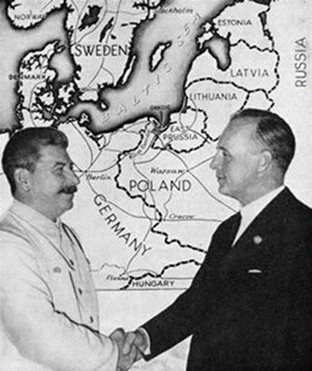

Jean Lopez, directeur de la rédaction de Guerres & Histoire, et Lasha Otkhmezuri, docteur en histoire, ont commis une étude magistrale intitulée Barbarossa et sous-titrée « 1941, la guerre absolue ». Nous avons en toute vérité énormément apprécié cette somme de 960 pages qui fourmille d’anecdotes, d’explications et d’analyses des plus éclairantes. Cette campagne peut en effet, de prime abord, sembler difficile à saisir dans son ensemble, car elle cumule les fronts, les attaques, les contre-attaques, les sièges, les retournements de situation les plus exceptionnels et improbables.
Elle engloutit les soldats et ravage les terres. Des milliers de chars et d’avions entrent en service pour détruire l’ennemi.
L’opération Barbarossa reste à ce jour la plus grande invasion de l’histoire militaire en termes d’effectifs engagés et de pertes cumulées.
Lancée le 22 juin 1941, un an jour pour jour après la signature de l’armistice avec la République française, Barbarossa fixe à quatre mois le délai nécessaire à l’anéantissement militaire de l’Union Soviétique. Pour l’anecdote, il faut savoir que Napoléon inaugura sa campagne de Russie le 24 juin 1812 avec la réussite que chacun connaît. De fait, les Allemands, conscients malgré tout du potentiel militaire russe à venir, veulent détruire rapidement les forces armées soviétiques, avant que celles-ci ne puissent déployer leurs forces dans toute leur étendue, et en exprimer toutes les dimensions.
Dès les premières lignes, nous lisons : « la Wehrmacht entame une guerre d’extermination et de colonisation ; l’Armée rouge et la population soviétique se vident de leur sang, prises entre les feux d’un ennemi sans pitié et les assauts de la terreur stalinienne ». Même au plus fort du conflit, Staline et les siens craignent des complots de l’intérieur alors que la majorité de la population russe ne pense qu’à une seule chose : survivre. Ainsi, les commissaires politiques soviétiques emprisonnent de nombreux russes, ce qui renforce leur défiance à l’endroit du régime. Des millions de prisonniers, politiques ou non, tentent de survivre au Goulag, tandis que la police politique – présente partout – est haïe. Sous le régime des soviets, la délation demeure une règle de savoir-survivre pour être bien considéré par les autorités.
Comme l’expriment très bien les deux auteurs, « l’opération Barbarossa cumule les particularités. A ce titre, elle occupe une place à part sans l’histoire militaire. Jamais, depuis les guerres de religion, un conflit militaire n’a été idéologisé à ce point. Des deux côtés des troupes politiques — SS/SD et NKVD – poursuivent des objectifs propres, dont de nombreux éléments sont néanmoins intériorisés par l’encadrement et la troupe. Les Allemands tentent de présenter leur aventure comme une croisade paneuropéenne, en appelant à eux armées de l’Axe et contingents venus des pays occupés ; les Soviétiques font donner partout les partis communistes, leur cinquième colonne. »
Lopez et Otkhmezuri relèvent également les caractéristiques propres des belligérants : « Les Allemands apportent dans leurs bagages une tradition de violence contre les civils ennemis, l’obsession des francs-tireurs et des partisans, la primauté donnée au combat sur toute autre forme d’engagement militaire. L’Armée rouge est la créature d’un parti politique, dont elle intègre les organes et les méthodes de surveillance et de répression ; elle est indifférente au sang versé par ses soldats ou aux souffrances de ses propres citoyens. »
Les nationaux-socialistes et les soviétiques s’appuient d’une même façon sur une vision politique qui se revendique absolue, totale, et seule légitime, juste et même bonne. Les auteurs estiment que « les deux adversaires se nourrissent de mythes puissants – judéo-bolchevisme et complot capitaliste – qui marquent les opérations, la diplomatie, les buts de guerre. » Cependant, avant d’en arriver à se combattre jusqu’à la mort, les deux blocs entretiennent des échanges cordiaux, qu’ils soient diplomatiques, politiques et économiques. Les auteurs démontrent avec des arguments et des preuves irréfutables que les deux gouvernements ont cherché à trouver des terrains d’entente.
Prenons le temps de mentionner la signature du Pacte germano-soviétique, officiellement traité de non-agression entre l’Allemagne et l’Union soviétique, qui regroupe un ensemble d’accords diplomatiques et militaires signés le 23 août 1939 à Moscou, par les ministres des Affaires étrangères allemand, Joachim von Ribbentrop, et soviétique, Viatcheslav Molotov, en présence de Staline. Jusqu’à la fin de l’année 40, les diplomates allemands et russes discutent pour que les deux « empires » soient alliés.
Dans le même ordre d’idée, et ce n’est malheureusement pas enseigné par oubli volontaire ou par méconnaissance historique, les soviétiques dans le cadre des accords commerciaux signés avec les nationaux-socialistes, leur ont livré du pétrole, des céréales et des matières premières. Les chiffres donnent le tournis : 900 000 tonnes de pétrole, 1,6 million de tonnes de céréales et 140 000 tonnes de minerai de manganèse. Paradoxalement, les Russes ont donc participé à l’effort de guerre contre leur pays. Ces captivantes péripéties sont parfaitement décryptées dans l’ouvrage. Elles permettent de saisir tous les enjeux diplomatiques des années 30, trop souvent réduites dans l’enseignement officiel à un affrontement du bien contre le mal.
Toutefois, l’antagonisme pesait trop lourd entre le Reich et l’URSS pour qu’ils n’entrassent pas en conflit tôt ou tard. Lors de la montée des tensions débouchant sur la guerre totale, nous notons que « des deux côtés on se berce d’illusions : de soi-disant fragilité, d’origine raciale, du système soviétique, ou de solidarité attendue des ouvriers sous uniforme allemand ; l’on sous-estime l’adversaire et l’on surestime ses propres forces à un point qui défie tout bon sens militaire ; l’on croit à une guerre courte et peu sanglante pour soi-même ; l’on applique des plans d’opérations ineptes, comme conçus par des dilettantes œuvrant dans un monde de purs concepts ; l’on croit détenir la formule magique de la victoire, qu’on la nomme Blitzkrieg allemande ou pensée opérative soviétique ». Il existe souvent un monde d’écart entre les discussions dans les bureaux confortables de l’état-major et la réalité du terrain comme l’apprennent à leurs dépens des millions de soldats. Un des nombreux points qui a également retenu notre attention : la volonté des auteurs de détailler les erreurs stratégiques et tactiques commises par les différents acteurs de ce drame.
Lopez et Otkhmezuri rappellent que « le résultat de cette moisson de superlatifs est la création d’un brasier de proportions monstrueuses. Combats, exécutions, famines délibérées tuent en deux cents jours plus de 5 millions d’hommes, femmes et enfants, soldats et civils. Mille morts à chaque heure, nuit et jour. C’est, sur un seul front, le semestre le plus létal de la Seconde Guerre mondiale, et, sans doute, dans toute l’histoire humaine. »
Les auteurs usent d’une métaphore pour montrer la réalité de cette guerre : « l’enfer de Dante est une tiède géhenne comparé aux grands mouroirs à ciel ouvert qui s’égrènent le long de la ligne de front, dans Leningrad assiégé, dans les 200 camps de prisonniers de guerre soviétiques, dans les villes occupées, ravagées par la faim. Le nazisme et son armée donnent la pleine mesure de leur potentiel de destruction, de nature centrifuge : on tue l’autre. Pour survivre à l’assaut, le bolchevisme stalinien radicalise sa violence, de nature paranoïaque et centripète : on tue d’abord parmi les siens. Il utilise les armes avec lesquelles il a édifié une industrie, collectivisé l’agriculture, éliminé des classes sociales entières. Contrairement à ce que certains intellectuels soviétiques ont ressenti pour eux-mêmes, la guerre ne change pas le stalinisme : elle l’exalte. »
Pour rédiger ce passionnant ouvrage les auteurs ont pu s’appuyer sur des authentiques sources d’informations. Ils nous disent que « les matériaux abondent. Archives militaires et diplomatiques, mémoires, journaux d’unités et écrits personnels, rapports, enquêtes, interviews de vétérans menés par nous-mêmes, sont mis à profit, qu’ils aient été écrits en russe, en ukrainien, en allemand, en anglais, en géorgien, en italien ou en espagnol. » Lopez et Otkhmezuri prennent le temps de décrypter leurs méthodes de travail. C’est vraiment intéressant de savoir que leurs recherches reposent sur l’étude de nombreux et différents types de documents, de surcroît écrits en plusieurs langues. Ils ajoutent que « les journaux intimes constituent aussi des sources précieuses, notamment pour saisir les mouvements de l’opinion et ce produit phare de la société soviétique, la rumeur. »
Ce livre répond à de nombreuses questions. Nous en reproduisons certaines : « Comment l’Armée rouge, monstre pataud, dominée de la tête et des épaules, détruite deux fois, reconstruite deux fois, a-t-elle pu se sauver d’un désastre qui semblait au monde entier inévitable ? Comment la Wehrmacht a-t-elle pu pousser son effort jusqu’à tomber littéralement en morceaux ? Qui, comme Staline, s’est fait surprendre par une attaque qui se dessinait son nez, jour après jour et pendant des mois, et dont il avait été averti cent fois ? Qui, comme les chefs de la Wehrmacht, s’est refusé à voir que cet adversaire que l’on donnait pour mort allait sortir du tombeau et frapper avec vigueur ? » Les réponses à ces pertinentes interrogations se trouvent dans cette production intellectuelle d’excellente facture.
Il ne faut pas perdre de vue que « l’échec de l’opération Barbarossa a engendré des conséquences considérables et à longue portée. Elle renverse le sablier du conflit et permet d’apercevoir le terme de l’aventure nazie. L’Etat soviétique, suicidaire du fait des dérèglements même du système stalinien, prolonge son existence de quarante ans par sa victoire et le retentissement qu’il sait lui donner. » Lopez et Otkhmezuri estiment avoir « voulu présenter une vision équilibrée des deux camps – et de leurs alliés respectifs -, passant du Kremlin à la Redoute du loup, des états-majors des Fronts à ceux des groupes armées, du NKVD aux Einsatzgruppen, des unités en marche aux usines et aux fosses d’exécutions. »
Néanmoins, ils précisent que « la vision équilibrée signifie que les adversaires ont droit à une place équivalente, non que nous les renvoyions dos à dos. » Ils ajoutent que pour eux « les morts de l’opération Barbarossa sont bien à la charge de l’Allemagne, le pays agresseur ».
Cette dernière idée exprimée peut quand même surprendre, étant donné que tous les spécialistes de cette période partent du principe, que tôt ou tard, les soviétiques auraient attaqué les nationaux-socialistes. De même, dans un souci de vérité et de justesse historiques, il s’avère effectivement impossible de renvoyer dos à dos deux systèmes politiques dont l’un a duré de 1933 à 1945, soit à peine douze ans, tout en étant limité à l’Allemagne ou à l’Europe centrale, alors que l’autre naquit en 1917 et a fini balayé par un vent de liberté en 1989 – soixante-douze ans de durée de vie – après avoir essaimé en Chine, Corée, Vietnam, Cambodge, Cuba, Vénézuela, etc. Aujourd’hui encore, certains pays se réfèrent toujours au communisme. Ce constat est quand même très inquiétant au vu du bilan humain de ces différents régimes…
En définitive, comment est-il possible de comprendre cette terrible tragédie ? Les mots manqueront toujours pour décrire l’horreur de la guerre et la folie des hommes. Pourtant, les deux historiens parviennent, grâce à un labeur de quinze ans, à restituer tous les enjeux de cette campagne militaire sur le sol russe en proposant une véritable enquête remontant aux origines du communisme et du national-socialisme. Ils analysent également la chronologie implacable de 1917 à 1940, quand tout se joue après la défaite de la France. Cette fresque historique retrace d’une manière limpide, nonobstant la masse d’informations à analyser et à comprendre, ce semestre effroyable où l’héroïsme se mêla aux plus viles actions humaines. Le récit se veut clair, pédagogique et véritablement instructif. Le lire permet de comprendre cette opération Barbarossa opposant « les deux systèmes militaires les plus puissants et les deux régimes les plus brutaux » de l’époque…
Partager cette page